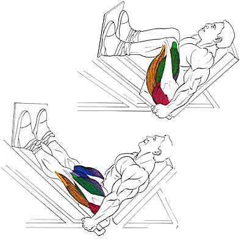

Базовое упражнение, которое позволяет проработать мышцы ног с большим весом, при этом сняв нагрузку со спины.
Воздействие этого упражнения на квадрицепс достигается при узкой постановке ступней.
Исходное положение:
Плотно прижать поясницу к сиденью.
Ноги расположить на платформе.
Техника выполнения:
Разогнуть колени в верхней точке.
Задержитесь на 1-2 счета в выжатом положении и затем медленно вернитесь в исходное положение.
Рекомендации:
Поясница при выполнении упражнения хорошо прижата к сидению во избежание серьезных травм.
Колени в верхней точке не разгибаются полностью, а в нижней точке почти касаются груди, образуя прямой угол.
Широкая постановка ступней с разведением носков в стороны делает акцент на внутренней поверхности бедра.